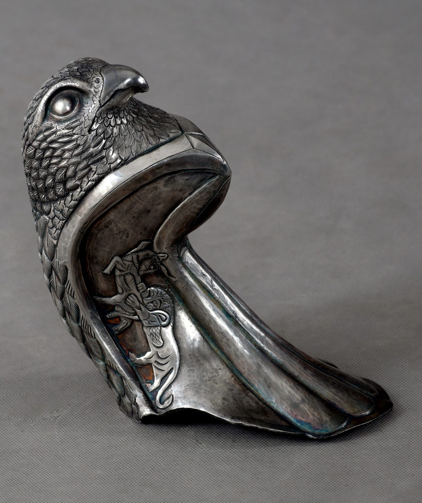

Guardian Falcon
A contemporary Persian falcon-form takuk/rhyton work by Hadi Hafezi, shaped in Isfahan as a watchful animal-vessel body of elevated sight, protection and disciplined authority.
Newly created contemporary artwork. Not an antiquity. Not an archaeological object. Not a historical replica.

A vessel with a vigilant eye
Guardian Falcon is built around the idea of a watchful body. The falcon is not added to the vessel as decoration; its gaze, head, surface and opening turn the work into a compact form of guardianship.
The power of this work comes from alertness. It carries the feeling of a creature that sees before it moves: lifted, sharp, contained and protective.
The lion-and-bull motif and the cuneiform-inspired surface elements belong to the symbolic language of the work. They deepen its Persian visual memory without turning it into a historical inscription or a copy of an ancient object.
Within Padyar Takuk’s revival of contemporary takuk-making, Guardian Falcon gives the vessel its authority through sight, concentration and controlled vigilance.
The falcon’s head gives the work its direction: a focused, watchful presence rather than a passive vessel.
The work carries a guardian quality — alert, elevated and inwardly disciplined.
Lion-and-bull and cuneiform-inspired elements operate as contemporary symbolic language.
The difficulty lies in keeping bird, vessel, surface and structure unified in metal.
Head, opening and symbolic surface
The main view emphasizes the falcon’s compact authority: the lifted head, the contained body, the dark vessel opening and the tension between polished presence and hammered surface.

Why the falcon form is difficult
A falcon-form takuk is difficult because metal naturally carries weight, while the falcon must suggest height, sharpness and alertness. The work has to feel lifted without becoming fragile, and authoritative without becoming heavy.
The head, beak, opening, neck, surface rhythm and inner motif must remain connected. If the head becomes too dominant, the vessel disappears. If the body becomes too still, the falcon loses its vigilance. If the surface becomes too busy, the authority of the form weakens.
Guardian Falcon depends on a precise balance between sculptural volume and symbolic surface. The making matters because the bird, vessel and sign must read as one controlled body.
Its vessel logic remains present through the opening, body and inner space, but the work is presented as a contemporary artwork within display, cultural and collection contexts — not as everyday tableware, silverware, homeware or a decorative vessel.
The value of Guardian Falcon is in controlled vigilance: a contemporary animal-vessel body shaped as a watchful form.
شاهین نگهبان
شاهین نگهبان اثری درباره نگاه، مراقبت و اقتدار آرام است. در این اثر، شاهین فقط تصویر یک پرنده نیست؛ سر، دهانه، سطح و حجم فلز با هم بدنی میسازند که بیدار، هوشیار و محافظ به نظر میرسد.
قدرت این اثر از سنگینی ظاهری نمیآید؛ از تیزبینی، ارتفاع و هوشیاری میآید. اینجا ظرف به بدنی تبدیل میشود که گویی چشم، تمرکز و مراقبت دارد.
نقش شیر و گاو و عناصر الهامگرفته از خط میخی، بخشی از زبان نمادین اثر هستند. آنها به حافظه تصویری ایرانی اشاره میکنند، اما ادعای کتیبه تاریخی یا بازسازی یک شیء باستانی ندارند.
دشواری ساخت شاهین در این است که فلز باید هم سنگینی و دوام داشته باشد، هم حس پرنده را از دست ندهد. سر، منقار، دهانه، گردن، سطح چکشخورده و نقش درونی باید همزمان کنترل شوند تا اثر نه به مجسمه ساده تبدیل شود و نه به ظرفی معمولی.
در مسیر احیای معاصر هنر تکوکسازی توسط پادیار تکوک، شاهین نگهبان نقش نگهبان را به بدن ظرف میدهد؛ اثری تازه، دستساخته و مستقل که از فلز، نگاه، نماد و حافظه ایرانی شکل گرفته است.
این اثر عتیقه، شیء باستانشناسی، کپی تاریخی یا بازسازی موزهای نیست. منطق ظرف بودن در فرم آن واقعی است، اما جایگاه اثر در قلمرو نمایش، مجموعهداری، حافظه فرهنگی و فلزکاری معاصر است؛ نه ظرف مصرفی روزمره، نه نقرهجات، نه شیء خانگی و نه محصول دکوری.
Artwork status and professional review
Guardian Falcon is a newly created contemporary artwork by Hadi Hafezi in Isfahan and part of the Padyar Takuk practice.
The essential clarification is simple: this work is not an antiquity, archaeological object, museum copy, historical replica, tableware, silverware, homeware or decorative vessel. Its vessel logic belongs to the artwork’s animal-vessel structure and cultural memory, not to ordinary product use.
Selected documentation, artwork records, image-use information and presentation material may be shared only within appropriate professional, curatorial or cultural review.